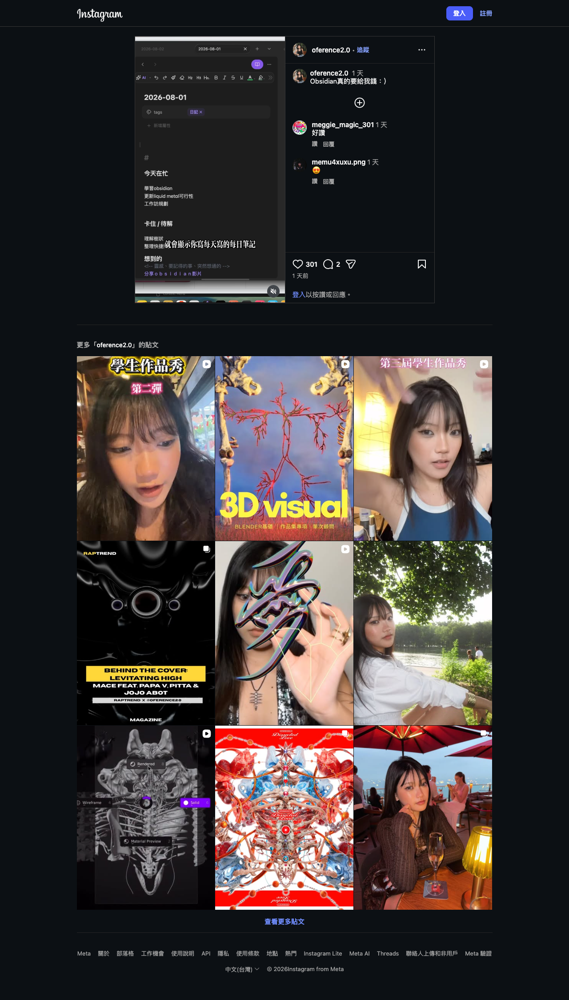
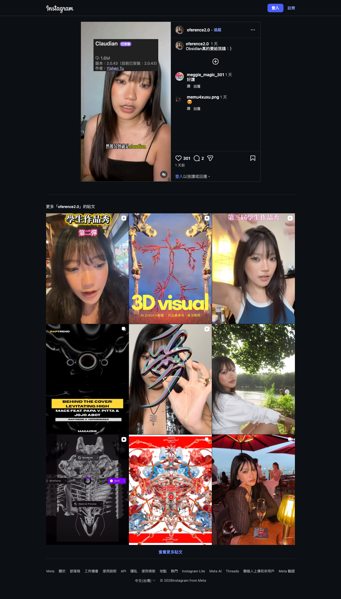
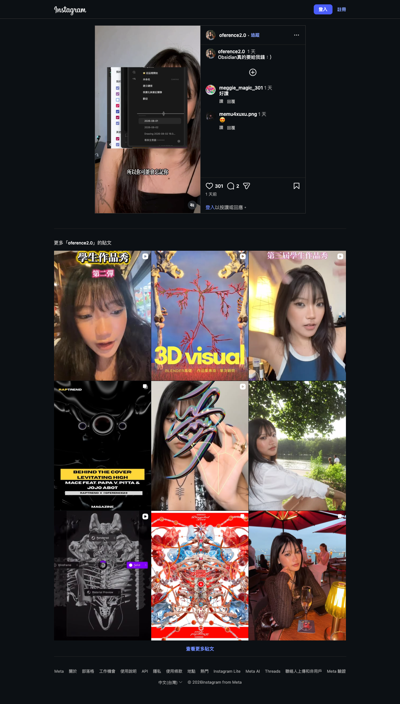

Instagram｜Obsidian 真的要給我錢：Daily Notes、Canvas 與 Claudian 的外部大腦工作流
為什麼保存
這則 Instagram Reel 的文案很短：「Obsidian真的要給我錢：）」，但影片畫面其實踩到一個很重要的個人知識管理趨勢：把 Obsidian 從「Markdown 筆記軟體」升級成可視覺化、可每日累積、可接 AI agent 的外部大腦。
我用未登入可見畫面抽樣 5、25、45、65 秒進行辨識；因為沒有完整字幕檔，以下只整理可靠可見資訊，不補腦成完整教學逐字稿。
Reel 可見內容摘要
作者與貼文資訊：
- 作者：Instagram `@oference2.0` / 莊 Oference
- 文案：`Obsidian真的要給我錢：）`
- 可見互動：301 likes、2 comments
- Reel 長度：約 82.5 秒
- canonical：`https://www.instagram.com/oference2.0/reel/Dbjyi5ovLt3/`
### 影片抽樣畫面
第 5 秒可見字幕：
> 自由度非常高的一個 app
搭配貼文文案，該 app 指向 Obsidian。
第 25 秒畫面顯示 Obsidian 每日筆記：

可見內容包括：
- 日期檔名 / 分頁：`2026-08-02`、`2026-08-01`
- 筆記標題：`2026-08-01`
- properties：`tags`，值為 `日記`
- 每日模板欄位：
- `今天在忙`
- `卡住 / 待解`
- `想到的`
- 字幕：`就會顯示你每天寫的每日筆記`
這一段重點是 Daily Notes + Properties + 固定模板，把每日生活、工作卡點與靈感整理成可回顧資料。
第 45 秒畫面顯示 Claudian 外掛：

可見外掛資訊：
- 名稱：`Claudian`
- 狀態：已安裝
- 版本：畫面可見 `2.0.43`
- 作者：`Yishen Tu`
- 字幕：`然後另外就是 claudian`
第 65 秒畫面顯示 Obsidian Canvas / 視覺化筆記：

可見文字包括：
- `從這裡開始`
- `未命名` / `CANVAS`
- `建立連接`
- `視覺化與筆記聯動`
- `專案全景圖` / `CANVAS`
- 日期筆記：`2026-08-01`、`2026-08-02`
- 字幕片段：`所以你可能會忘記你...`
這一段看起來是在示範：把每日筆記、圖像化 canvas、專案全景圖連在一起，降低「寫了但找不到 / 想了但忘記」的成本。
官方與可靠來源查核
### Obsidian Daily Notes
Obsidian 官方文件確認，Daily Notes 是核心外掛，可開啟或建立以今日日期命名的筆記；預設會用 `YYYY-MM-DD` 格式命名，也能搭配 template 讓每日筆記有固定結構。這與影片中 `2026-08-01`、`2026-08-02` 形式一致。
### Obsidian Properties
Obsidian 官方文件確認，Properties 可用於組織筆記資訊，支援文字、連結、日期、checkbox、number、tags 等結構化資料，也可與社群外掛搭配。影片中 `tags: 日記` 屬於這類 metadata 用法。
### Obsidian Canvas
Obsidian 官方文件確認，Canvas 是核心外掛，用於視覺化筆記；可在 2D 空間排列、連接 notes、images、attachments、web pages，並以 `.canvas` 檔案儲存。影片中的「建立連接」「視覺化與筆記聯動」「專案全景圖」與 Canvas 定位一致。
### Claudian
Obsidian community plugins 清單與 GitHub repo 確認：
- plugin id：`realclaudian`
- 名稱：`Claudian`
- 作者：`Yishen Tu`
- repo：`YishenTu/claudian`
- manifest 目前版本：`2.0.44`
- minAppVersion：`1.7.2`
- desktop only：`true`
- 描述：將 Claude Code、Codex 與其他 coding agents 作為 vault 裡的 AI collaborators；vault 會成為 agent 的 working directory，提供檔案讀寫、搜尋、bash commands、多步驟 workflow 等能力。
需要注意：community plugins 清單同時標示 Claudian 尚未經 Obsidian staff 手動審查；這不代表不能用，但代表導入前要做風險評估。
可以怎麼用在個人知識系統
這則 Reel 可整理成三層工作流：
- 每日輸入層：Daily Notes
- 每天一篇固定模板：今天在忙、卡住/待解、想到的。
- 用 tags / properties 標記類型，例如 `日記`、`專案`、`課程`。
- 視覺化整理層：Canvas
- 把每日筆記、專案全景圖、參考資料拖進 canvas。
- 用線條建立關聯，從「流水帳」變成「可回看脈絡」。
- AI 協作層：Claudian / coding agents
- 在 vault 裡用 Claude Code、Codex 等 agent 搜尋、整理、改寫、生成索引。
- 適合做跨筆記摘要、專案脈絡整理、產出課程講義或 dashboard 原型。
導入前提醒
- Claudian 會讓 AI agent 以 vault 作為 working directory；這代表它可能讀寫筆記、搜尋檔案、執行 shell。務必先備份 vault、使用 Git 或 Time Machine。
- 不要把 API key、密碼、學生個資、未公開名單放在可被 agent 自動讀取的 vault 區域。
- Claudian 需搭配外部 CLI / provider，例如 Claude Code、Codex、OpenRouter、Kimi、DeepSeek 等；成本、隱私與資料流向依供應商而異。
- Obsidian 社群外掛更新很快；影片畫面版本為 2.0.43，查核時 manifest 顯示 2.0.44，實際功能需以安裝當下版本為準。
- Instagram Reel 沒有可直接保存的完整逐字稿；本文只基於可見畫面與官方文件，不宣稱完整還原作者所有說法。
來源
- Instagram Reel：`https://www.instagram.com/reel/Dbjyi5ovLt3/`
- Obsidian Daily Notes 官方文件：`https://obsidian.md/help/plugins/daily-notes`
- Obsidian Canvas 官方文件：`https://obsidian.md/help/plugins/canvas`
- Obsidian Properties 官方文件：`https://obsidian.md/help/properties`
- Claudian GitHub：`https://github.com/YishenTu/claudian`
- Claudian community plugin id：`realclaudian`